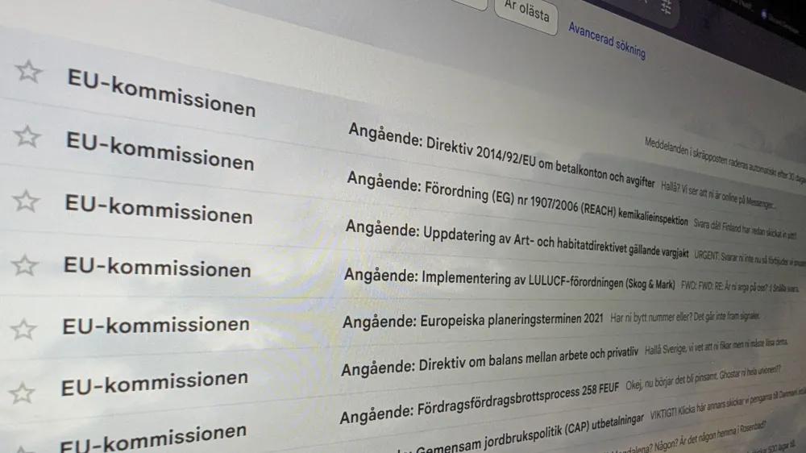

Politik

10-årig EU-lag upptäcks av regeringen
Regeringen upptäckte häromdagen en tio år gammal EU-lag. Statsledningen hittade lagen när de rensade igenom gammal skräppost. Lagen sätter en maxgräns på hur mycket skog som EU-länder får skövla, vilket Sverige har överskridit tre gånger om. Den hittade lagen blev ett startskott för en undersökning där många tidigare oupptäckta EU-lagar grävdes fram. Undersökningen har precis börjat men redan har över 200 EU-lagar hittats. Lagarna handlar om allt från miljö- och djurskyddsregler till migrationslagar. Regeringen förklarade under en presskonferens igår att orsaken till denna miss kan ha att göra med att regeringen bytte telefonnummer några år sedan och aldrig berättade det för EU. V och SD var snabba med kritiken där de tryckte på att om de hade varit i regering hade det här aldrig hänt. I ett uttalande sa EU-kommissionen till AP att de är djupt besvikna i Sverige och känner att Sveriges regering inte tar kommissionen seriöst. Kommissionen har nu börjat skriva en ny lag som gör det olagligt att glömma EU-lagar i skräpposten.